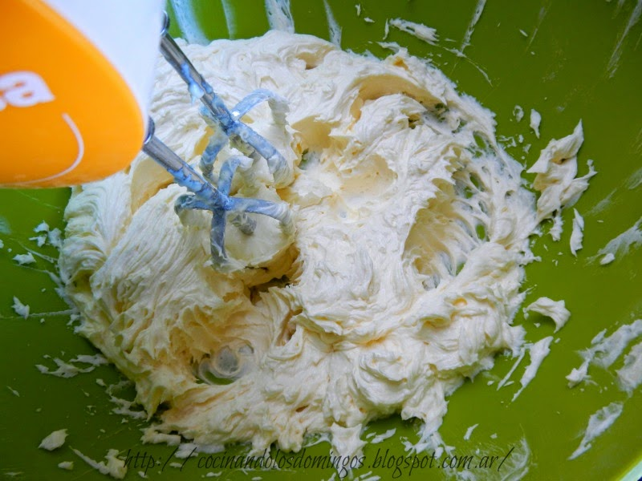
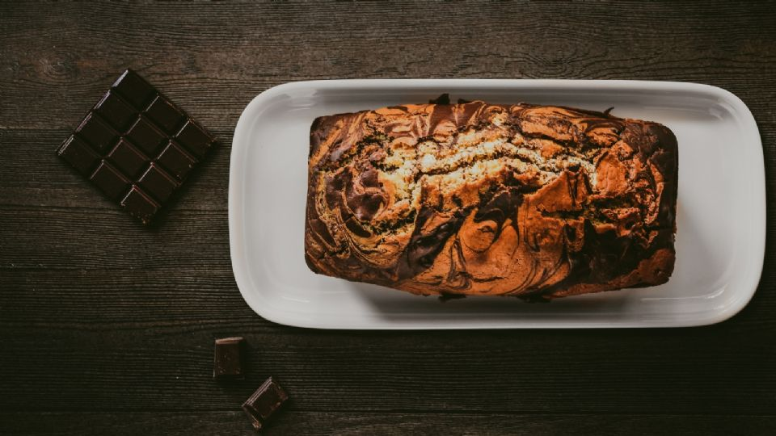

Budín Marmolado

El budín marmolado se caracteriza por ser bicolor cuya receta tradicional es aquella sabor vainilla y chocolate. Este budín se caracteriza por su humedad ya que entre los ingredientes tenemos manteca y crema de leche, lo que lo hace todavía más delicioso.
- 2 huevos
- 140gr de azúcar
- 80gr de manteca
- 80ml de crema de leche
- 200ml de leche
- 25gr de harina 0000
- 15gr de polvo para hornear
- 20gr de cacao amargo
- 1 cda de esencia de vainilla
Ingredientes:
- Budinera (30cm)
- Microondas
- Bowl
- Batidor de mano
- Horno
Utencilios:
- Enmantecar y enharinar una budinera de 30 cm. Pre calentar el horno a 180°C.
- Derretir la manteca a baño maría o en microondas.
- Mezclar la manteca derretida con el azúcar, agregarle los huevos y la esencia de vainilla.
- Luego incorporar ¾ de la leche, la crema de leche y batir con batidor de mano ligeramente hasta que todos los ingredientes se incorporen. 
- Agregar la harina y polvo de hornear previamente tamizados.
- Dividir la mezcla en 2 partes, una con más cantidad de la otra (75% y 25% aproximadamente).
- A la parte de menor cantidad agregarle el resto de la leche y el cacao en polvo tamizado (si llegara a quedar un poco espesa, agregarle un poco más de leche).
- Verter la mezcla de chocolate y arriba la mezcla de vainilla.
- Cocinar en el horno a 180°C por 35/40 minutos aproximadamente.
- Desmoldar el budín una vez que esté tibio. 